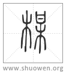

楳
或从某。
清代 段玉裁《說文解字注》
- 枏也。可食。從木。每聲。
莫桮切。古音在一部。按釋木曰。梅、枏也。毛詩秦風、陳風傳皆曰。梅、枏也。與爾雅同。但爾雅、毛傳皆謂楩枏之枏。毛公於召南摽有梅、曹風其子在梅、小雅四月侯栗侯梅、無傳。而秦、陳乃訓爲枏。此以見召南等之梅與秦、陳之梅判然二物。召南之梅今之酸果也。秦陳之梅今之楠樹也。楠樹見於爾雅者也。酸果之梅不見於爾雅者也。樊光釋爾雅曰。荊州曰梅。楊州曰枏。益州曰赤楩。孫炎釋爾雅曰。荊州曰梅。楊州曰枏。陸機疏草木曰。梅樹皮葉似豫樟。皆謂楠樹也。枏亦名梅。後世取梅爲酸果之名。而梅之本義廢矣。郭釋爾雅乃云似杏、實酢。篇、韵襲之。轉謂酸果有枏名。此誤之甚者也。然則許以枏梅二篆廁諸果之閒。又云可食。豈非始誤與。曰此淺人所改竄也。如許謂梅、酸果。其立文當先梅篆、云酸果也。次枏篆、云梅也。棃杏李桃等不云可食。何必獨云可食哉。許意某爲酸果正字。故某篆解云酸果也。從木從甘。其字當本廁𣐈下杏上。而枏梅二篆當本廁諸木名之閒。淺人易其處。又增竄其文耳。以許書律羣經。則凡酸果之字作梅、皆假借也。凡某人之字作某、亦皆假借也。假借行而本義廢。固不可勝數矣。
- 或从某。
某聲。召南釋文曰。韓詩作楳。